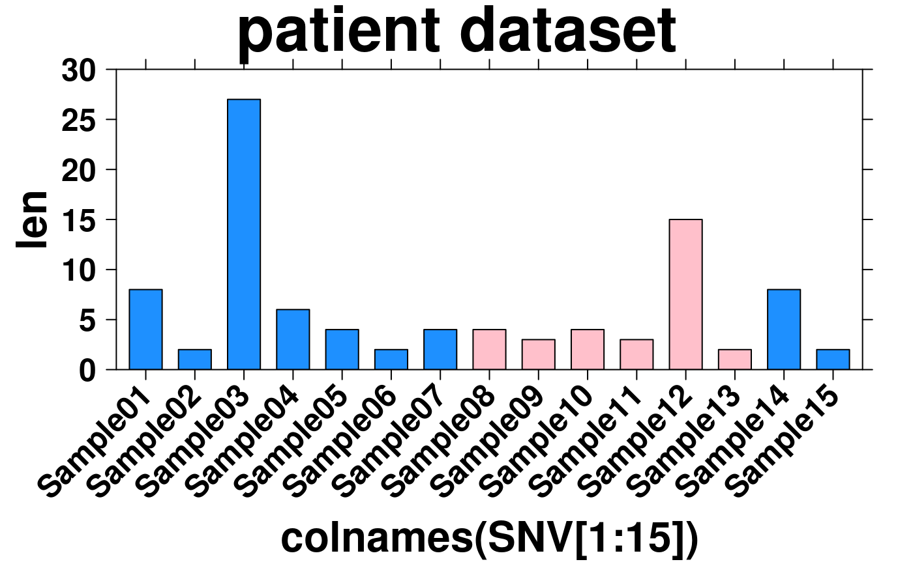

Dataset describing qualities of 58 colon cancer patients
patient.RdA number of qualities describing 58 colon cancer patients.
The same patient samples are described in the "microarray", "SNV"
and "CNA" datasets.
Format
A data frame with 5 columns and 58 rows. Each row indicates a different patient sample, with the following columns describing a feature of the sample:
- sex
The sex of the paient, either "male" or "female"
- stage
The stage of the patient's cancer, one of "I", "II", "III", "IV", or NA
- msi
The microsatellite instabiltiy of the cancer, either "MSS" or "MSI-High"
- prop.CAGT
The proportion of C to A or G to T base changes between the sample and reference genome
- prop.CTGA
The proportion of C to T or G to A base changes between the sample and reference genome
- prop.CGGC
The proportion of C to G or G to C base changes between the sample and reference genome
- prop.TAAT
The proportion of T to A or A to T base changes between the sample and reference genome
- prop.TGAC
The proportion of T to G or A to C base changes between the sample and reference genome
- prop.TCAG
The proportion of T to C or A to G base changes between the sample and reference genome
Examples
# use sample to set colour scheme
sex.colours <- replace(as.vector(patient$sex), which(patient$sex == 'male'),'dodgerblue');
sex.colours <- replace(sex.colours, which(patient$sex == 'female'), 'pink');
len <- apply(SNV[1:15], 2, function(x){mutation.count <- length(which(x == 1))});
create.barplot(
# filename = tempfile(pattern = 'Using_patient_dataset', fileext = '.tiff'),
formula = len ~ colnames(SNV[1:15]) ,
data = SNV,
main = 'patient dataset',
xaxis.rot = 45,
ylimits = c(0,30),
yat = seq(0,30,5),
col = sex.colours,
description = 'Barplot created by BoutrosLab.plotting.general'
);
